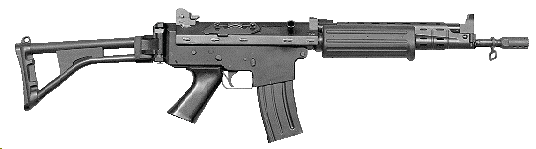

Assault rifle
An assault rifle is a selective fire rifle that uses an intermediate cartridge and a detachable
magazine.
Assault rifles were first put into mass production and accepted into widespread service during World War
II. The first assault rifle to see major usage was the German StG 44, a development of the earlier Mkb
42. While immediately after World War II, NATO countries were equipped with battle rifles, the
development of the
M16 rifle during the Vietnam War prompted the adoption of assault rifles by the rest of NATO. By the end
of the 20th century, assault rifles had become the standard weapon in most of the world's armies,
replacing full-powered rifles and sub-machine guns in most roles. The two most successful modern assault
rifles are the AK-47 and the M16 designs and their derivatives.

Origin of term
The term assault rifle is generally
ttributed to Adolf Hitler, who used the German word Sturmgewehr (which translates to "assault rifle") as the
new name for the MP 43, subsequently known as the Sturmgewehr 44.Allied propaganda suggested that the name
was chosen for propaganda purposes, but the main purpose was to differentiate the Sturmgewehr from German
submachine guns such as the MP 40.
It has been suggested, however, that th
e Heereswaffenamt was responsible for the name Sturmgewehr, and Hitler had no input besides signing the
production order. Furthermore, Hitler was initially opposed to the idea of a new infantry rifle, as Germany
lacked the industrial capacity to replace the 12,000,000 Karabiner 98k rifles already in service, only
changing his mind once he saw it first-hand.
The StG 44 is generally considered the first selective fire
military rifle to popularize the assault rifle concept. Today, the term assault rifle is used to define
firearms sharing the same basic characteristics as the StG 44.

Defenition
The U.S. Army defines assault rifles as "short, compact, selective-fire weapons that fire a cartridge
intermediate in power between submachine gun and rifle cartridges." In this strict definition, a firearm
must have at least the following characteristics to be considered an assault rifle:
It must be capable of selective fire.
It must have an intermediate-power cartridge: more power than a pistol but less than a standard rifle or
battle rifle, examples of intermediate cartridges are the 7.92×33mm Kurz, the 7.62×39mm and 5.56×45mm NATO.
Its ammunition must be supplied from a detachable box magazine.
It must have an effective range of at least 300 metres (330 yards).
Rifles that meet most of these criteria, but not all, are not assault rifles according to the U.S. Army's
definition. For example:
Select-fire M2 Carbines are not assault rifles; their effective range is only 180 metres (200 yd).
Select-fire rifles such as the Fedorov Avtomat, FN FAL, M14, and H&K G3 main battle rifles are not assault
rifles; they fire full-powered rifle cartridges.
Semi-automatic-only rifles like the Colt AR-15 are not assault rifles; they do not have select-fire
capabilities.
Semi-automatic-only rifles with fixed magazines like the SKS are not assault rifles; they do not have
detachable box magazines and are not capable of automatic fire.